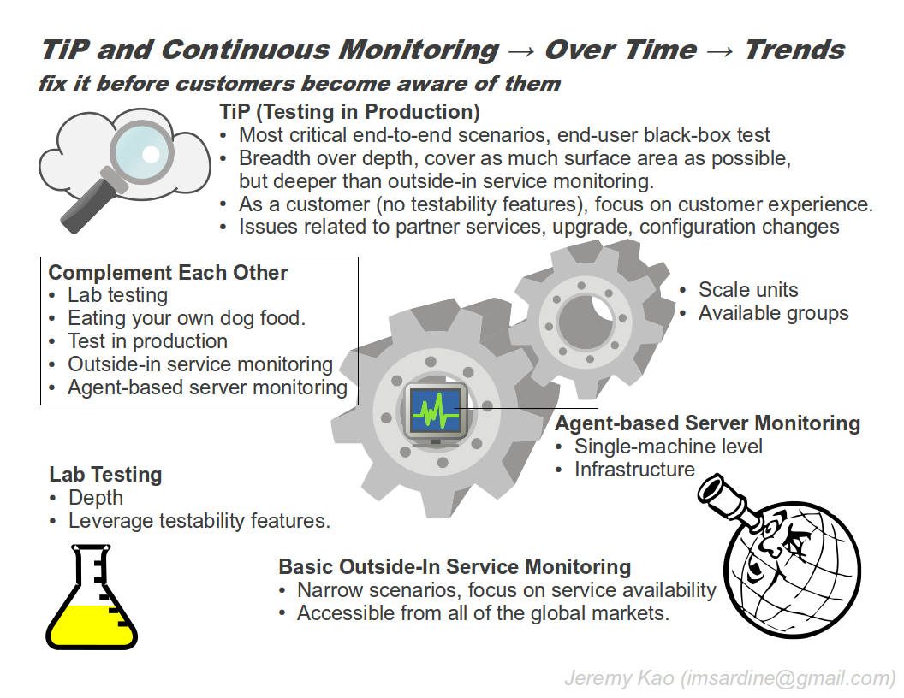

Chapter 3 Moving to the Cloud: The Evolution of TiP, Continuous Regression Testing in Production
SUT:
-
Exchange Server 2010
-
150+ testers, and 150+ automators
-
5000 test machines, 70000 automated test cases
-
most testing tools are in-house developed
-
ROI was never done, because of product strategy
